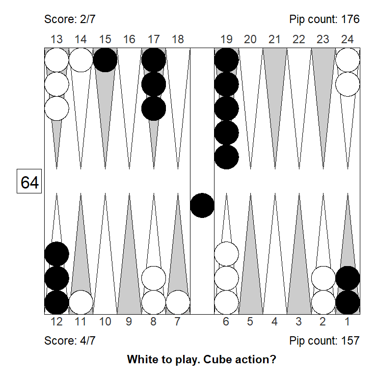
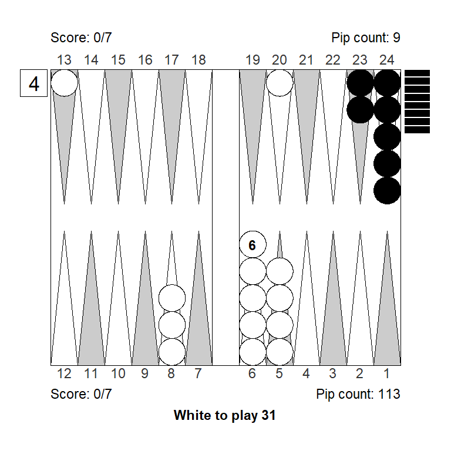
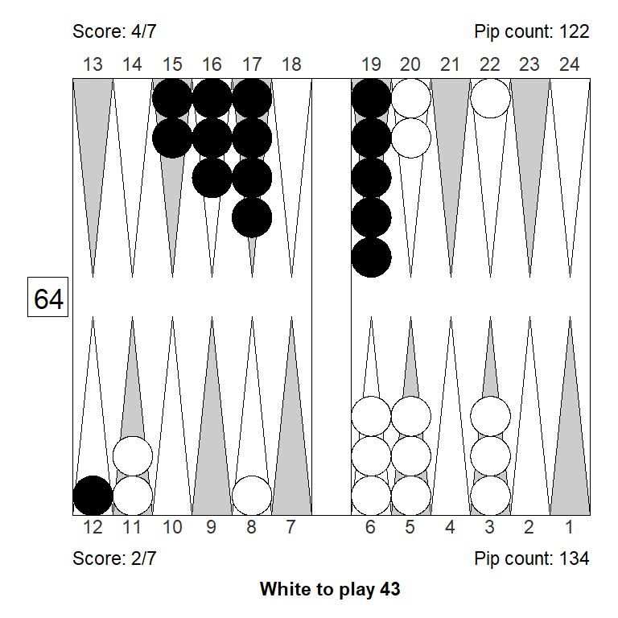
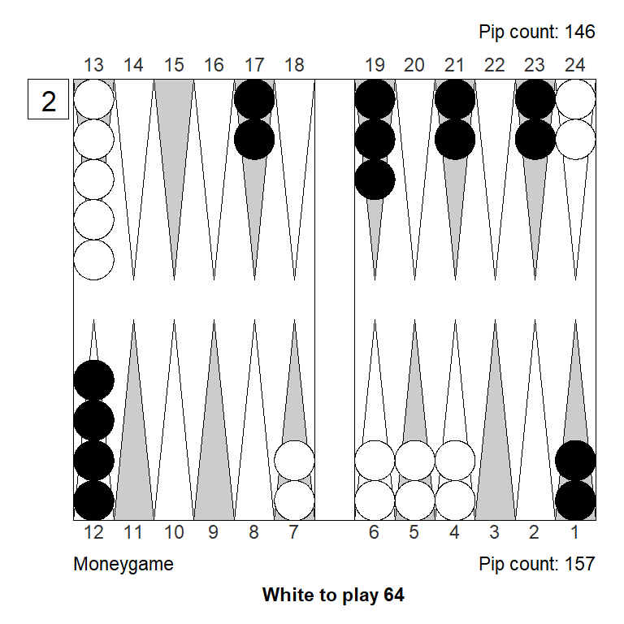

Milestones III, 2023
Why this?
This is a collection of positions from the Milestones III tournament in Denmark, 2023, where players compete for wins and for best performance rating (PR). Every player gets to play 15 7-point matches. I will collect about one problem from each of my own matches: Positions where I made some mistake, that I found difficult, surprising or otherwise interesting.
In some cases, I show also variations, to better understand what is going on. I will organize the positions only into cube actions and checker plays, adding more as they come.
Cube actions
Position 1
Over the board, this looked to White like a strong double. White has an excellent forward structure, a fat racing lead, and a 4-point prime that can be extended from the back in relative safety, since Black has two checkers on the bar. The only weakness is White’s blot on the ace point, but getting hit is not a big deal, so it can’t be much of a liability.
Meanwhile, Black has made almost no progress; only the 11-point is made.
White guessed this was a strong double, and a smallish take for Black. It is, however, the other way around: White has only a small double, Black has a huge take:
Cubeful Equities:
No double: +0,690 (-0,047)
Double/Take: +0,736
Double/Pass: +1,000 (+0,264)
1296 Games rolled with Variance Reduction.
Moves: 3-ply, cube decisions: XG RollerLooking at the outcome probabilities, we see that White does have a big gammon threat, but also that Black wins more than a third of the games:
| Regular | Gammon | Backgammon | Sum | |
|---|---|---|---|---|
| Player wins | 0.292 | 0.340 | 0.024 | 0.656 |
| Opponent wins | 0.265 | 0.072 | 0.007 | 0.344 |
| Sum | 0.557 | 0.412 | 0.031 | 1.000 |
One thing that might be overlooked here, is that White has very few real crushing sequences, because he’s a little short on ammo. Black will almost always make some kind of anchor, and then have some kind of counter play agains White’s three back checkers.
To see if this result is match-score related, let’s check the same position for money, and while we’re at it, also check if XG Roller ++ (fast, truncated rollouts), gets it right, compared to a full rollout at strong settings.

Cubeful Equities:
No double: +0,800 (-0,120)
Double/Take: +0,920
Double/Pass: +1,000 (+0,080)
1296 Games rolled with Variance Reduction.
Moves: 3-ply, cube decisions: XG Roller
Analyzed in XG Roller++
No double: +0,784 (-0,134)
Double/Take: +0,918
Double/Pass: +1,000 (+0,082)For money, the double is bigger, and the take is smaller, so more in line with White’s first impression. It appears that the 2-point lead for White does make a difference.
But why?
The next table shows Black’s take points under different assumption: a) No cube and no gammons (like a last-roll position); b) no cube and gammon rates from the table above; and c) taking both cube and gammons into account.
| Cube assumptions | Money game take point | 7-away, 5-away take point | Difference |
|---|---|---|---|
| Dead cube, no gammons | 0.250 | 0.240 | -0.010 |
| Dead cube, gammons | 0.384 | 0.382 | -0.002 |
| Both cube and gammons | 0.343 | 0.304 | -0.039 |
The last-roll take point is not too different from money at this score, and it also doesn’t make much difference to factor in gammons. When we consider possible recubes, however, we see that Black’s take point at the score, is somewhat lower than it would be for money.
This is because he’ll redouble more aggressively at the score. We can see why, by looking at White’s take points for a potential recube, assuming the same gammon frequencies:
| Cube assumptions | Money game take point | 5-away, 7-away recube take point | Difference |
|---|---|---|---|
| Dead cube, no gammons | 0.250 | 0.266 | 0.016 |
| Dead cube, gammons | 0.264 | 0.333 | 0.069 |
| Both cube and gammons | 0.236 | 0.312 | 0.076 |
So, it looks like a good part of White’s flawed evaluation of the original position, comes from the fact that Black can take somewhat more aggressively at the score; hence White needs more to have a really strong double.
The reason for Black’s lower take point at the score, lies mostly in the potential redouble in positions where gammons are possible: It’s hard for White to accept a 4-cube at 5-away 7-away, where a gammon loss is much more costly than a gammon win.
Still, the position is also a clear take for money, so there’s some reconsideration for White to do in that department too. What will it take to turn the position into a really tough take for money?
If we activate the awkward spare on the ace-point, we suddenly have a big pass. Perhaps not surprising, since we’re turning a big liability into a big asset. But still:

Analyzed in XG Roller++
Cubeful Equities:
No double: +0,979 (-0,021)
Double/Take: +1,273 (+0,273)
Double/Pass: +1,000Even if we put the spare checker in a less ideal place, we still get a double/pass:

Analyzed in XG Roller++
Cubeful Equities:
No double: +0,929 (-0,071)
Double/Take: +1,045 (+0,045)
Double/Pass: +1,000That spare has to move out of the action, to get to a marginal pass:

Analyzed in XG Roller++
Cubeful Equities:
No double: +0,913 (-0,087)
Double/Take: +1,011 (+0,011)
Double/Pass: +1,000Finally, we get to a decent take, noting that Black is no longer far behind in the race:
Analyzed in XG Roller++
Cubeful Equities:
No double: +0,874 (-0,072)
Double/Take: +0,947
Double/Pass: +1,000 (+0,053)One way to see how bad White’s ace-point blot is, is to consider the original position after something like 31: 24/20. Now, most aces, like 21, 31, 41, and 51, are below-average rolls for Black, even though they hit. White is hoping to get hit (except with 41 and 11, trying for a high anchor); that’s how bad the blot is.
Another experiment would be to improve White’s opportunity to extend the prime from the back. A one-pip change can be huge: We go from a clear take to a pretty clear pass:
Analyzed in XG Roller++
Cubeful Equities:
No double: +0,856 (-0,144)
Double/Take: +1,059 (+0,059)
Double/Pass: +1,000Another change in the same spirit is to bring in another builder for that important 9-point. It has about the same effect as slotting the 9-point:
Analyzed in XG Roller++
Cubeful Equities:
No double: +0,854 (-0,146)
Double/Take: +1,065 (+0,065)
Double/Pass: +1,000A final one-pip change that has a rather dramatic effect, is to just semi-active the ace-point checker so it easier becomes part of a prime, and is both easier and more attractive to cover. Again, we go from a clear take to a clear pass:
Analyzed in XG Roller++
Cubeful Equities:
No double: +0,849 (-0,151)
Double/Take: +1,062 (+0,062)
Double/Pass: +1,000Summing up:
- A two-point lead in a 7-point match matters, especially if you might face a recube when gammons are still possible.
- What seems to be a strong positional advantage, might not be so strong if there are also liabilities.
- An awkward ace-point blot can be a rather big liability
- Small things matter: One pip can make a it much easier to turn a strong position into a winning position.
Position 2

This is another example of blitz that could work as a bluff double: It might look like White has a strong blitz going, but in fact the take is easy, and this is not even a double. In practice, it’s not impossible to get a pass. (In the actual game, Black passed this.)
Analyzed in XG Roller++
Cubeful Equities:
No double: +0,579
Double/Take: +0,534 (-0,045)
Double/Pass: +1,000 (+0,421)At the match score, the error from passing is gigantic, for money it is smaller but still big:

Analyzed in XG Roller++
Cubeful Equities:
No double: +0,664 (-0,078)
Double/Take: +0,742
Double/Pass: +1,000 (+0,258)To better understand why this score is so different from money, we can compare the take points for money and at the score, using different assumptions:
| Cube assumptions | Money game take point | 7-away, 5-away take point | Difference |
|---|---|---|---|
| Dead cube, no gammons | 0.250 | 0.240 | -0.010 |
| Dead cube, gammons | 0.369 | 0.368 | -0.001 |
| Both cube and gammons | 0.330 | 0.288 | -0.042 |
As in position 1, it is the powerful recube access that makes Black considerable more inclined to take at the score, compare to money game.
Let’s keep the money game variant, and play with features of the position.
The ace-point slots makes all the difference in the world, because it commits White to a blitz. If we turn the slot into a builder White can both blitz or prime, and two strong game plans are much better than one. As a result Black has a moderate sized pass in the variant below.
Analyzed in XG Roller++
Cubeful Equities:
No double: +0,865 (-0,135)
Double/Take: +1,067 (+0,067)
Double/Pass: +1,000Also, making it a bit easier for White to jump his back checkers, turns the position into just a borderline take.
Analyzed in XG Roller++
Cubeful Equities:
No double: +0,784 (-0,211)
Double/Take: +0,996
Double/Pass: +1,000 (+0,004)In summary, it is the combination of having to jump a prime, without being on the edge, and being committed to a blitz, and being a little short on ammunition, that makes Whites’s position weaker than it might appear.
Position 3

White had a good start, and considered doubling, but must be mindful of the score, leading 3-away, 5-away. Is the position strong enough to double?
No, doubling would be a big mistake:
Analyzed in XG Roller++
No double: +0,452
Double/Take: +0,160 (-0,292)
Double/Pass: +1,000 (+0,548)To better understand the position, consider two illustrative variants: Money game (left), and money game with White’s 2-point switched back a pip (right) so it becomes the 3-point:

Analyzed in XG Roller++
Cubeful Equities:
No double: +0,619
Double/Take: +0,556 (-0,063)
Double/Pass: +1,000 (+0,381)Analyzed in XG Roller++
Cubeful Equities:
No double: +0,731 (-0,011)
Double/Take: +0,742
Double/Pass: +1,000 (+0,258)The original is still a no-double for money, although doubling is a much smaller mistake that at the score. Shifting to a better inner point makes a clear difference; now the decision to double is really close, and White has a small double.
Bringing in more ammunition and making the 11-point is required to turn the position into a solid double/take for money, although it would still be a clear no-double at the score:
Analyzed in XG Roller++
Cubeful Equities:
No double: +0,686
Double/Take: +0,581 (-0,105)
Double/Pass: +1,000 (+0,314)Analyzed in XG Roller++
Cubeful Equities:
No double: +0,838 (-0,082)
Double/Take: +0,920
Double/Pass: +1,000 (+0,080)Only if we in addition to the modifications above, also switch back to the much stronger 4-point, do we have a double at the score, but only just. For money, the position is now a big pass.

Analyzed in XG Roller++
Cubeful Equities:
No double: +0,847 (-0,011)
Double/Take: +0,859
Double/Pass: +1,000 (+0,141)Analyzed in XG Roller++
Cubeful Equities:
No double: +0,939 (-0,061)
Double/Take: +1,164 (+0,164)
Double/Pass: +1,000Let’s compare take points at the score and for money (using outcome probabilities from the original position) to see why cube action is so different at this score than for money:
| Cube assumptions | Money game take point | 5-away, 3-away take point | Difference |
|---|---|---|---|
| Dead cube, no gammons | 0.25 | 0.287 | 0.037 |
| Dead cube, gammons | 0.36 | 0.350 | -0.010 |
| Both cube and gammons | 0.32 | 0.258 | -0.062 |
While it would actually be harder for Black to accept a double in a short race (a 4-roll position would be a pass), the ability to redouble makes all the difference.
The take points are based on the below outcome probabilities from XG roller++. Note that Black has as much as 38 percent to win this game (in the original position):
| Regular | Gammon | Backgammon | Sum | |
|---|---|---|---|---|
| Player wins | 35.42 | 22.2 | 3.91 | 61.53 |
| Opponent wins | 29.15 | 8.8 | 0.52 | 38.47 |
| Sum | 64.57 | 31.0 | 4.43 | 100.00 |
In summary, when leading 3-away, 5-away, in a typical middle game position, the leader should have a position that is a clear money pass, to consider doubling. That potential re-cube is just too powerful to let your opponent have.
Position 4
Here, White figured that escaping with a 6 or making the 9- or 10-point, could lead to a market loss and doubled. White failed to pay enough attention to the match score, and overestimated the position a bit, the combination of which made the decision to double a 0.308 blunder.
The three diagrams below show left to right: a) the position for money: A borderline double at best; b) The modification required to turn it into a solid double and a solid take; c) The closest variant that would make the position only a small take for money
The market loss that White imagined was something like a 63: 22/13, which would indeed have lost White’s market – if Black was not allowed to roll. But Black gets to roll, and most rolls make some kind of improvement that allows Black to take, so true market losers are rare.
But the big part of the mistake was failing to account for the match score. It’s easy to see how the ability to recube to 4 is a powerful thing for Black when trailing 7-away, 3-away. After a redouble/take, Black can win 4 points, with the added possibility of winning a gammon and the match; White can win only 3 points and can’t benefit from gammons.
Let’s line up Black’s take points in a table and compare to money game:
| Cube assumptions | Money game take point | 7-away, 3-away take point | Difference |
|---|---|---|---|
| Dead cube, no gammons | 0.250 | 0.251 | 0.001 |
| Dead cube, gammons | 0.288 | 0.264 | -0.024 |
| Both cube and gammons | 0.252 | 0.187 | -0.065 |
Like we saw in an earlier problem, Black can take really deep at this score and these gammon frequencies – take point all things considered is about 19%.
For money White can justify a cube on a sunny day; at the match score he needs a better position.
The variant that makes for a marginal money game take, for example, would still be a sizable no-double at the score:

Analyzed in XG Roller++
Cubeful Equities:
No double: +0,731
Double/Take: +0,573 (-0,158)
Double/Pass: +1,000 (+0,269)Position 5
This one is much the same theme as the previous position: White overestimated their winning chances and figured that escaping the back checker would be a clear market loss. In fact, this is a big no double:
Analyzed in XG Roller++
Cubeful Equities:
No double: +0,385
Double/Take: +0,114 (-0,271)
Double/Pass: +1,000 (+0,615)The mistake is magnified by the score, but for money it is still a massive no-double:

Analyzed in XG Roller++
Cubeful Equities:
No double: +0,488
Double/Take: +0,343 (-0,145)
Double/Pass: +1,000 (+0,512)It is easy to see the mistake considering that escaping and having Black fan, will not even turn it into a double, much less a drop:
Analyzed in XG Roller++
Cubeful Equities:
No double: +0,747
Double/Take: +0,713 (-0,035)
Double/Pass: +1,000 (+0,253)In fact, to make this position a close take/pass decision, White needs pretty massive improvements, like this:
Analyzed in Rollout
Cubeful Equities:
No double: +0,913 (-0,076)
Double/Take: +0,989
Double/Pass: +1,000 (+0,011)The weakness of White’s position comes in large part from the the gap on the 4-point. If we close that (by sliding Black’s anchor forward one pip), the the escape/fan-sequence is now a double/take. (The original position, of course, remains a no-double, even with the gap closed, since escape/fan is still not a market loss).
Analyzed in XG Roller++
Cubeful Equities:
No double: +0,877 (-0,043)
Double/Take: +0,920
Double/Pass: +1,000 (+0,080)Position 6
In this position White underestimated an attacking position, and failed to take the match score into account, and so took a double that is a big pass:
Analyzed in XG Roller++
Cubeful Equities:
No double: +0,984 (-0,016)
Double/Take: +1,300 (+0,300)
Double/Pass: +1,000The fact that White can lose a costly gammon and can almost never redouble, is what makes the error really big. Black’s gammon value after double/take is 0.57; White’s gammon value is 0.36. Should White decide to redouble, Black can pass and get to match winning chance of 0.09 or take and redouble if he is doing any better than that. So White can’t get much benefit from the cube either.
But the position itself is also quite bad, a clear money pass:
Analyzed in XG Roller++
Cubeful Equities:
No double: +0,914 (-0,086)
Double/Take: +1,089 (+0,089)
Double/Pass: +1,000Part of the problem with White’s position is the made ace-point; sliding that point back to the 3-point results in a marginal take/pass:
Analyzed in XG Roller++
Cubeful Equities:
No double: +0,884 (-0,112)
Double/Take: +0,996
Double/Pass: +1,000 (+0,004)Of course, removing the annoying double shot that Black has in the outfield, also improves White’s position a lot. Clear money-take here (although still a pass at the original score):
Analyzed in XG Roller++
Cubeful Equities:
No double: +0,810 (-0,069)
Double/Take: +0,879
Double/Pass: +1,000 (+0,121)To turn the position into a take at 3-away, 7-away, White needs a series of improvements: A big upgrade of the ace-point into the 5-point, removing the 14-point shot, and placing Black’s escaped checker a little further from home:
Analyzed in Rollout
Cubeful Equities:
No double: +0,892 (-0,106)
Double/Take: +0,997
Double/Pass: +1,000 (+0,003)Black is still a lot better off than White since he has nearly escaped both back checkers, and is well ahead in the race. Black wins about 70% of the games, but White can probably just squeeze out a very marginal take at the score.
Position 7
This one, half backgame, half holding game, is a little unusual and can be hard to evaluate. Black is, of course, miles behind in the race and need to hit a shot to win. On the positive side, Black has a great defensive structure to generate hits. But not right away, White has no shot-leaving rolls, although there will be later. Since this is not a deep backgame, the gammon danger isn’t too great.
In the actual game, White doubled and Black took. It turns out to be small no-double:
Analyzed in XG Roller++
Cubeful Equities:
No double: +0,706
Double/Take: +0,672 (-0,034)
Double/Pass: +1,000 (+0,294)Let’s first confirm that this is not due to the match score: For money the no-double is actually a little bigger:

Analyzed in XG Roller++
Cubeful Equities:
No double: +0,696
Double/Take: +0,635 (-0,061)
Double/Pass: +1,000 (+0,304)The market loss that White is hoping for, is something like 62. Then, on average, the market will be lost, as Black needs to roll small to secure enough timing to gain a take. But this is a very good sequence for White, and the market loss is mostly small:
1. XG Roller++ 10/4 6/4 eq:+1,010
Player: 76,61% (G:8,72% B:0,10%)
Opponent: 23,39% (G:1,60% B:0,05%)White’s big issue is the 4-point gap. If we shift back the 2-point checkers to the 4-point, it’s a whole other story; White is now borderline too good to double:
Analyzed in XG Roller++
Cubeful Equities:
No double: +1,001
Double/Take: +1,089 (+0,088)
Double/Pass: +1,000 (-0,001)Timing is another big issue; we can give Black back a take, even with the 4-point-modification, if also move White forward, improving Black’s timing:
Analyzed in XG Roller++
Cubeful Equities:
No double: +0,946 (-0,031)
Double/Take: +0,977
Double/Pass: +1,000 (+0,023)Another timing experiment: If we in the original position (money game variant) move Black’s spare back 14 pips, his position gets stronger so it becomes even more of a no-double. Note that Black is now also somewhat blocked and risk crunching, but the timing benefit outweigh this:
Analyzed in XG Roller++
Cubeful Equities:
No double: +0,592
Double/Take: +0,482 (-0,110)
Double/Pass: +1,000 (+0,408)Interestingly, clearing White’s 10-point is not a big issue: If we clear the point in a very smooth way with lot’s of new spares, White’s position gets worse, not better, because Black’s timing also improves in the process, and because White now has shot-leaving 3’s, 31, 35, 36, and in general awkward 5’s, in particular 54 and 55.
Analyzed in XG Roller++
Cubeful Equities:
No double: +0,569
Double/Take: +0,456 (-0,113)
Double/Pass: +1,000 (+0,431)Position 8
This one is from the same match and somewhat related to the previous position, but a more pure holding game. White has a big, but not decicive, 15-pips lead in the race. White’s game is much improved compared to a standard holding game by the made 7-point, but the gap on the 5-point works the opposite direction, and to some extent cancels out that benefit.
In the game White doubled, which is a significant mistake:
Analyzed in XG Roller++
Cubeful Equities:
No double: +0,661
Double/Take: +0,560 (-0,101)
Double/Pass: +1,000 (+0,339)As is often the case, the mistake is due to a combination of mis-evaluating the score, and the position. For money, it is still a no-double, but the mistake is smaller:

Analyzed in XG Roller++
Cubeful Equities:
No double: +0,673
Double/Take: +0,616 (-0,057)
Double/Pass: +1,000 (+0,327)
Analyzed in Rollout
Cubeful Equities:
No double: +0,694
Double/Take: +0,649 (-0,045)
Double/Pass: +1,000 (+0,306)
1296 Games, variance reduction.
Moves: 3-ply, cube: XG RollerThe above analysis includes a full rollout to make sure the truncated XG roller++ is not off. The difference is small.
It’s not hard to see that White, leading 3-away, 5-away, should be careful about doubling because a potential recube is powerful. On the other hand, the position has few gammons, and Black may have less recube vig than normal, as is often the case in holding games, where you go from no-double to huge pass after hitting a shot. So let’s examine a bit more.
The outcome probabilities, based on XG roller++, is as follows:
| Regular | Gammon | Backgammon | Sum | |
|---|---|---|---|---|
| Player wins | 0.676 | 0.020 | 0.000 | 0.697 |
| Opponent wins | 0.286 | 0.017 | 0.000 | 0.303 |
| Sum | 0.962 | 0.037 | 0.001 | 1.000 |
Which yield the following take points, for money and at the score, under different assumptions. (Since gammons and backgammons are so few, it matters little if they are taken into account.)
| Cube assumptions | Money game take point | 5-away, 3-away take point | Difference |
|---|---|---|---|
| Dead cube, no gammons | 0.250 | 0.287 | 0.037 |
| Dead cube, gammons | 0.254 | 0.285 | 0.031 |
| Both cube and gammons | 0.218 | 0.218 | 0.000 |
We see that the trailer has a rather high take point, but also a lot of cube levarage, so that the final take point, taking everything into account, is very similar to money game, for this close to gammonless position.
So, the reason why doubling is a bigger mistake at the match score compared to money, is not that Black as much easier take. It is because there is more equity at stake, so close to the end of the match.
Back to the position itself, in the money game variant.
The 5-point-gap is enough of an asset for Black, that if we remove it, White now has s small money-double, even though the race lead is two pips smaller:
Analyzed in XG Roller++
Cubeful Equities:
No double: +0,702 (-0,011)
Double/Take: +0,714
Double/Pass: +1,000 (+0,286)The racing equity is a big part of the story; if we give Black another 9 pip the we go from a huge take to a small pass:
Analyzed in XG Roller++
Cubeful Equities:
No double: +0,951 (-0,049)
Double/Take: +1,047 (+0,047)
Double/Pass: +1,000A combination of the two: Keeping the increased racing deficit but getting back the 5-point-gap, and we’re back to a very small double. It looks like the 5-point gap just about makes it up for trailing an extra 9-pips:
Analyzed in XG Roller++
Cubeful Equities:
No double: +0,808 (-0,012)
Double/Take: +0,819
Double/Pass: +1,000 (+0,181)Position 9
This position is interesting because both players made a huge error: White by doubling, Black by passing.
It’s easy to see that White has a ton of shots (27 rolls hit somewhere), and that Blacks position is badly underdeveloped.
It is perhaps less easy to realize that White’s position overall is not all that strong: He is behind in the race, on the bar, and short on attack material. He has 9 bad sixes that doesn’t hit anything, after which Black has at least an even position.
Bottom line is big no double/take:
Analyzed in XG Roller++
Player Winning Chances: 56,23% (G:20,52% B:1,00%)
Opponent Winning Chances: 43,77% (G:9,54% B:0,42%)
Cubeful Equities:
No double: +0,375
Double/Take: +0,161 (-0,213)
Double/Pass: +1,000 (+0,625)White being on the bar is a really big deal: If we move that checker to the 15-point, White no longer has the 9 bad sixes, and the race is closer. Result is a smallish double, and a clear take for Black:
Analyzed in XG Roller++
Cubeful Equities:
No double: +0,666 (-0,059)
Double/Take: +0,724
Double/Pass: +1,000 (+0,276)If we move the same checker just another 4 pips forward, White now has a double shot on the vulnerable Black checker on the 8-point and more ammunition closer to the key 4-point. It now becomes a strong double, and a borderline pass:
Analyzed in XG Roller++
Cubeful Equities:
No double: +0,804 (-0,196)
Double/Take: +1,001 (+0,001)
Double/Pass: +1,000Position 10
A straight race, a rare 8-cube. If you know that White has about 24% match winning chances if he passes and trails 3-away, 7-away, it is easy to see that this is also the take point at this score and this cube value.
I you don’t know this by heart, a bit of reasoning will do: Doubling here doesn’t quite double stakes, since after double/take the game will be for 7 points, not 8. True, the 3 additional points are worth a lot, so doubling increases the stake by more than 75%, but still less than the normal 100% increase after double/take in a money game.
Therefore, the takepoint is a bit smaller that the ordinary 25% dead-cube-no-gammon-takepoint for money.
Checking the numbers, we see that the difference between winning and losing with the cube at 4 would be \(0.762 - 0.238 = 0.524\), and the difference between winning and losing with the cube at 8 would be \(1-0=1\). So the stake doesn’t quite double at this score and this cube level, but almost, hence the slightly lower take point.
In the position, White trails by two pips, so the take should be clear. The double is also okay, Black is a clear favorite, he is not giving away anything since the cube will be dead, and short races like this are always volatile.
The XG-numbers:
Analyzed in Rollout
No redouble
Player Winning Chances: 68,49% (G:0,00% B:0,00%)
Opponent Winning Chances: 31,51% (G:0,00% B:0,00%)
Redouble/Take
Player Winning Chances: 68,42% (G:0,00% B:0,00%)
Opponent Winning Chances: 31,58% (G:0,00% B:0,00%)
Cubeful Equities:
No redouble: +0,668 (-0,035)
Redouble/Take: +0,703
Redouble/Pass: +1,000 (+0,297)Position 11
It’s tempting to take this cube as White. There’s a lot of contact left, and White has a 3-point board, just like Black, as well as racing chances. Still, the take is quite wrong.
White is likely to be hit next turn, and must hope to hit back in order to win. Whites big weakness is the two inner board blots; they make the potential return hits a double edged sword.
As we see, the result of having those blots is a devastating number of gammons lost, making the position a clear pass:
Analyzed in XG Roller+
Player Winning Chances: 69,58% (G:37,05% B:1,66%)
Opponent Winning Chances: 30,42% (G:8,14% B:0,37%)
Cubeful Equities:
No double: +0,894 (-0,106)
Double/Take: +1,197 (+0,197)
Double/Pass: +1,000Naturally, it is a whole other story if we remove just one of the blots and turn it into a builder. From a big pass to a close take:
Analyzed in XG Roller++
Cubeful Equities:
No double: +0,757 (-0,210)
Double/Take: +0,966
Double/Pass: +1,000 (+0,034)If we improve further, by giving White a powerful board, the position is not even a double:
Analyzed in XG Roller++
Cubeful Equities:
No double: +0,528
Double/Take: +0,492 (-0,036)
Double/Pass: +1,000 (+0,472)Checker plays
Position 1
Here, White has four reasonable options:
- 13/11, 13/8, clearing the midpoint
- 11/4, placing a spare on the 4-point
- 11/6, 11/9, with spares on the 6- and 9-points
Unwilling to break the midpoint as long as reasonable alternatives existed, White played 11/4, wanting to leave fewer shots and cover more outfield, compared to 11/6, 11/9.
It is not hard to accept that this can be a mistake:
11/6, 11/9 also breaks the 11-point, but is more compact. It adds 63 to build the 3-point, slots the 9-point which could be useful, and only leaves 44 as an extra shot (a joker anyway).
13/11, 13/8, clearing the midpoint, puts full emphasis on White’s all-important 5-point, leaves no shot, and makes it more dangerous for Black to split with a roll like 42.
The interesting part is not that XG picks 13/11, 13/8, but the magnitude of the mistake is remarkable; anything but breaking the midpoint is a blunder:
XG Roller++
1. 13/11 13/8 eq:+0,026
2. 11/9 11/6 eq:-0,065 (-0,090)
3. 11/4 eq:-0,131 (-0,157)The key is, that after the top play, 9 rolls make a full 5-prime. After the second best play, only 4 rolls do that. Some rolls, 31 and 43, makes the 5-point but breaks the 8, which is not as strong. So the extra builders on the 11- and 8-points have real value.
Note that White should break the 13-point with a lot of rolls: 54, 43, 62, 42, 32, 51, and the 52 from the actual position.
51 deserves special mention, the funny looking 13/7 is probably slightly better than the aggressive slot, 11/5, which accomplishes the same thing, but with a different risk/reward ratio: A lot more shots, and a lot more ways to make the 5-point if missed.
The shots left in the outfield is not the main concern: 43 should be played 13/10 13/9 with lots of builders at the cost of 5 shots; 43: 11/8, 11/7 would be a blunder even though it looks flexible.
Likewise, with 32, 13/11, 13/10 is a lot better than 11/9, 11/8, since it creates four active builders for the 5-point rather than just three.
Summing up, making the 5-point and a 5-point-prime is likely to win the game, and White can easily afford to break the midpoint and leave a few fly-shots to increase the probability of achieving that goal.
Builders win out – if they aim at something important, and if they are not too likely to get hit.
Positions 2a-2e
These five positions share a common theme: The right play is hard to find for those of us who learned, back in the day, that the one thing you must never do in backgammon, is to make the ace-point.
Position 2a
XG Roller++
1. 5/1* 3/1 eq:+0,266
2. 8/6 5/1* eq:+0,215 (-0,051)
3. 7/1* eq:+0,204 (-0,062)Position 2b
XG Roller++
1. 6/1* 2/1 eq:-0,324
2. 8/7 6/1* eq:-0,361 (-0,037)
3. 24/23 6/1* eq:-0,413 (-0,089)Position 2c
XG Roller++
1. 8/6 2/1 eq:+0,178
2. 8/5 eq:+0,130 (-0,048)Position 2d
XG Roller++
1. 6/1 eq:+0,767
2. 8/3* eq:+0,754 (-0,013)
3. 9/5 6/5 eq:+0,723 (-0,044)Position 2e
XG Roller++
1. 24/23 16/15* 3/2* 2/1 eq:+0,909
2. 24/23 16/15* 3/2*(2) eq:+0,857 (-0,052)
3. 16/15* 8/7 3/2*(2) eq:+0,850 (-0,059)
4. 16/15* 8/7 3/2* 2/1 eq:+0,818 (-0,091)
5. 24/23 16/15* 8/7(2) eq:+0,804 (-0,105)In position 2a and 2b White must hit, he has the stronger board and while it is not good to get hit back, Black can also do some damage if left alone. After hitting on the ace point, anything but switching point just leave another blot for no particular gain.
In 2c White just overlooked switching – an easy thing to do if you learned to play pre-neural nets.
2d is just a case of a classic blitz: It doesn’t matter too much which points you make; in fact the ace-point may be better to make, since the higher points are easier to cover.
2e is a little more tricky prime vs. prime kind of thing. The important part is to but three checkers on the bar – then White might have time to recover even if hit back. It’s also good to advance with 24/23. So after three mandatory aces: 24/23, 16/15*, and 3/2*, it is easier to see that 2/1 is the right final ace, since it leaves a direct cover for the slotted 3-point.
The positional approach that White tried in the actual game, 24/23 16/15* 8/7(2), is no good; Black can both anchor or hit back.
Position 3
This is a technical play, where it is tempting to assume that all reasonable plays are close. Actually, they are not so close.
Obviously the play is all about getting off the gammon. Over the board, White played 19/9, thinking that it hardly mattered, as long as he made crossovers and avoided wastage by playing past the 6-point.
The gammon race is close. The probabilities that White will lose a gammon after the five best plays, are listed below.
1. 13/7 10/6 53.93%
2. 19/13 10/6 55.07%
3. 19/15 13/7 56.63%
4. 19/9 57.74%
5. 13/9 13/7 58,07%
1296 Games rolled with Variance Reduction.
Moves: 3-ply, cube decisions: XG RollerThe actual play, 19/9, increases the risk of getting gammoned, by almost 4 percentage points, so for money that would be about a 0.04 mistake, costing 4 percent of the cube value – a significant mistake.
Why so much?
The main concept in getting-off-the-gammon problems is to avoid “wasting” pips, by playing past the 6-point, those pips don’t help saving the gammon. Playing 10/6 with the 4 does just that, so must be right. Indeed, 10/6 is part of both top plays.
This is quite important, especially when the gammon race is close.
After 10/6 with the 4, 13/7 is best with the 6, simply because it creates a smaller stack: Two checkers on the 7- and 13-point, is better than one and four checkers respectively.
Position 4

This one is from the same game as position 3, but Black has rolled well, so White is now a big favorite to get gammoned. The 31 White has to play is a little funny, because the correct play seem to violate basic principles for getting off the gammon: Make crossovers; don’t waste pips.
The right play is 8/7 8/5, wasting a pip and failing to make two crossovers.
A little reflection shows that White needs to cater to specific doubles. After any play White needs 7 or 8 crossovers in three rolls, so one of those rolls has to be a double to save the gammon. After 8/7 8/5 any double makes 4 crossover, which is not true for the other plays, so that is the winner.
It’s true, that if White makes two crossovers now, with 13/12 8/5, he only needs to generate three crossovers from a future double. But 11 fails to do even that, so it loses a tiny bit there.
The other two-crossover play, played in the actual game, is 20/17 13/12 which also fails on 11, and plays worse on 55 and 44 as well.
The probabilities of losing a gammon after the 7 best plays are:
1. 8/7 8/5 89,63%
2. 13/12 8/5 89,78%
3. 20/19 8/5 90,42%
4. 8/4 90,99%
5. 20/16 91,03%
6. 20/19 13/10 91,09%
7. 20/17 13/12 91,39%
1296 Games rolled with Variance Reduction.
Moves: 3-ply, cube decisions: XG RollerPosition 5
This is a tough play. White has two reasonable but very different plays: Hitting with 24/18*/14, or priming with 13/7 11/7.
Hitting has big upsides and big downsides. Black hits back on fully 18 rolls, but also has some bad rolls, 4 dancing rolls, and an additional 8 bad sixes. Some hitting rolls, like 51, aren’t too happy either.
Priming could work, since White is behind in the race. It leaves Black a few immediate horror rolls, 55 and 44, but also some pretty strong hitting aces.
In the end, priming comes out slightly better:
1. 13/7 11/7 eq:+0,417
2. 24/18* 18/14 eq:+0,401 (-0,016)
3. 24/18* 11/7 eq:+0,239 (-0,178)Let’s have a look at the money game variant, together with a very minimal one-pip modification:

XG Roller++
1. 13/7 11/7 eq:+0,413
2. 24/18* 18/14 eq:+0,405 (-0,008)XG Roller++
1. 24/18* 18/14 eq:+0,367
2. 13/7 11/7 eq:+0,343 (-0,024)For money priming is still right, but now super close; the two plays are basically a photo finish.
But why the (small) difference compare to 7-away, 7-away score? The reason is, that the hitting play loses a bit more gammons than the priming play. At the score, the gammon value with the cube at two is 0.54, compare to 0.5 for money, so gammons are slightly more costly. For that reason, the hit is a bit more attractive for money, making the two plays even closer.
The real mystery, however, is the variation on the right, where one Black checker from the 5-point has moved back a pip to the 6-point. This seemingly very minor modification makes the hitting play correct by a small but a meaningful amount: 0.024.
The reason is, probably, that the change is not so small after all. Note that the equities in the second position are quite a bit lower, so White is significantly worse off. For that reason, there’s a bit less to lose, when the hitting play backfires.
Also, and perhaps more importantly, in a priming battle Black can use the extra spare on the 6-point to play future 4s, since that number is blocked on the other side of the board. For example, imagine White makes the priming play in both variations, and Black then rolls 54, making the 2-point. Now, the position with two spares on the 5-point really looks a lot worse than the variant with a spare on each of the 5- and 6-point. (And it is, evaluations confirm.)
Bottom line is that Black is better set-up for priming in the right-hand position, so White should chose another gameplan.
Small differences often are not so small.
Let’s do one more exercise with this position, and look at how a few analogous problems evaluate:
XG Roller++
1. 13/7 8/7 eq:+0,394
2. 24/23 24/18* eq:+0,367 (-0,027)
3. 24/18* 18/17 eq:+0,327 (-0,067)
4. 24/18* 11/10 eq:+0,314 (-0,080)
XG Roller++
1. 13/7 9/7 eq:+0,411
2. 24/18* 18/16 eq:+0,302 (-0,109)
3. 9/3 5/3 eq:+0,290 (-0,121)
XG Roller++
1. 24/21 24/18* eq:+0,427
2. 13/7 10/7 eq:+0,413 (-0,015)With a 61 to play, rather that a 64, priming performs better. Not so much because priming is better with 61, but because the alternative hitting plays are all worse than the hit-and-run-almost-home play available with 64.
In the second variation, with the same kind of choice for a roll of 62, priming is now a stand-out. Both because hitting and running still doesn’t run as far, and (I think more importantly) because hitting leaves an additional 4 very dangerous returns from the bar: 63 and 54.
In the final variation, hitting is slightly right, likely because the 10-point would be valuable to make also, so that checker works also as a slot. (Which may be covered with a 5 from the 15-point.)
Position 6
A technical play that White got wrong, by a surprising amount. White wanted to stay back, making it harder for Black to play safe, taking advantage of a stronger home board. The play made was 8/4 5/2, maintaing contact, trying to improve the home board fast.
The key is, that White is ahead in the race, not behind, and would like to release the back checker to steer into a more race-like position.
Any good play involves 22/18 with the 4:
XG Roller++
1. 22/18 5/2 eq:-0,274
2. 22/18 8/5 eq:-0,274 (-0,001)
3. 22/18 6/3 eq:-0,311 (-0,037)
4. 6/2 5/2 eq:-0,429 (-0,155)
5. 8/4 5/2 eq:-0,459 (-0,186)After 22/18, Black’s best rolls are the ones that hit on his 7-point without leaving returns: 61, 62, 21, 11, 22, 33 equalizing the race, along with 66 and 55, taking the lead in the race.
Black’s worst roll, surprisingly, is the quiet 43: 13/10 6/2, the smallest roll that fails to hit, after which the game is more or less equal. Other below-average rolls are the ones that hit but leaves dangerous returns: 52, 51, 42, 41, 32, 64. Black can play safe with these rolls, but is better off taking a moderate risk to get ahead in the race.
After the actual 8/4 5/2, Black’s worst roll is 51, played 8/2, voluntarily leaving only 4 indirect shots. The point is that the supposedly contact-maintaining play generates a lot fewer immediate shots than the contact-breaking play.
22/18 5/2 is so much better than 8/4 5/2 because it is better both for the race and for the hits.
In this variant, where White is behind in the race, 22/18 is still correct, although not by such a big margin, since it doesn’t have the added racing benefits:

XG Roller++
1. 22/18 11/8 eq:-0,598
2. 22/18 8/5 eq:-0,605 (-0,007)
3. 22/18 5/2 eq:-0,608 (-0,011)
4. 11/4 eq:-0,623 (-0,025)
5. 22/18 6/3 eq:-0,626 (-0,028)Position 7

This one is a little tricky: On White’s side of the board, White clearly has a priming position, so the indicated game plan would be to extend that prime. 13/7 13/9 is good for that, adding builders for both the 3-point and the 8-point.
On the the other side of the board, things are not so clear. Black’s position could be either for blitzing (three disjointed inside points) or for priming. If Black’s position is considered more of a prime, that would be a motivation for White to jump the prime, if considered a blitz, White would be more inclined to keep the anchor.
One way to think about it: White’s side of the board calls for a priming play, Black’s side of the board is more ambiguous. So on balance, probably priming is better. Indeed, the nod goes to the priming play, 13/9 13/7, with the top three plays being reasonably close.
XG Roller++
1. 13/9 13/7 eq:+0,379
2. 24/20 13/7 eq:+0,365 (-0,013)
3. 24/14 eq:+0,342 (-0,037)
4. 24/18 13/9 eq:+0,323 (-0,056)
5. 24/20 24/18 eq:+0,220 (-0,159)It’s not too surprising that the 24/20 split is better than the 24/18 split, since the former tries for the better anchor, and gets more return shots if hit.
As always, let’s check if the play is affected by some match score related artifact. It is not:
XG Roller++
1. 13/9 13/7 eq:+0,311
2. 24/20 13/7 eq:+0,299 (-0,012)
3. 24/14 eq:+0,276 (-0,035)
4. 24/18 13/9 eq:+0,241 (-0,070)
5. 24/20 24/18 eq:+0,136 (-0,175)Let’s play with the money game variant, and see how the preferred play changes, when we modify the position.
First, if we move one Black checker 13/8, Black has one more checker in the zone. The 8-point is not part of his prime, so overall Black’s position gets more blitz-like. In that light, it is not surprising that the priming plays stands out a little more. The strongest alternative is now running, 24/10, because any split is more dangerous in a blitz-like situation.

XG Roller++
1. 13/9 13/7 eq:+0,266
2. 24/14 eq:+0,232 (-0,034)
3. 24/20 13/7 eq:+0,215 (-0,052)
4. 24/18 13/9 eq:+0,181 (-0,086)Likewise if we modify Black with 13/6, the position is now even more blitz-like, increasing also the threat on a potential white plot on Black’s ace-point. The priming option is now clearly better.
XG Roller++
1. 13/9 13/7 eq:+0,310
2. 24/14 eq:+0,233 (-0,077)
3. 24/20 13/7 eq:+0,223 (-0,087)
4. 24/18 13/9 eq:+0,169 (-0,140)Next, suppose White has a 63 to play instead of 64. Now the strongest split, 24/20, is not available, so again priming stands out more clearly, even though the checker on the 10-point is not a builder for the 3-point. (On the positive side, it doesn’t leave a joker fly-shot either.) Running, 24/15, is now not a contender, because it leaves more shots, and is not as useful as the corresponding 64: 24/14 when missed.

XG Roller++
1. 13/10 13/7 eq:+0,304
2. 13/4 eq:+0,255 (-0,049)
3. 24/18 13/10 eq:+0,251 (-0,054)
4. 24/15 eq:+0,223 (-0,082)With 62 White now has the option of splitting with 24/22, which is as good as priming, while the running play is much worse, as expected.
XG Roller++
1. 13/11 13/7 eq:+0,315
2. 24/22 13/7 eq:+0,311 (-0,004)
3. 13/5 eq:+0,273 (-0,043)
4. 24/18 13/11 eq:+0,255 (-0,060)
5. 24/16 eq:+0,188 (-0,127)If White had a 45 to play, priming stands out, since it directly slots the 8-point and the 9-point, threatening to make a full prime next turn. Well worth the price of 6 fly-shots.
XG Roller++
1. 13/9 13/8 eq:+0,351
2. 24/20 13/8 eq:+0,271 (-0,081)
3. 13/4 eq:+0,255 (-0,096)
4. 24/15 eq:+0,223 (-0,129)If we make Black’s position less blitz-like, by moving the 6-point spare back to the 8-point, now splitting is correct.
XG Roller++
1. 24/20 13/7 eq:+0,331
2. 13/9 13/7 eq:+0,302 (-0,029)
3. 24/14 eq:+0,296 (-0,035)
4. 24/18 13/9 eq:+0,278 (-0,053)
5. 24/20 24/18 eq:+0,186 (-0,145)Also, if Black’s back checkers are split, it’s getting harder and more dangerous for White to extend his prime from the rear, so again splitting is slightly best.
XG Roller++
1. 24/20 13/7 eq:+0,173
2. 13/9 13/7 eq:+0,161 (-0,012)
3. 24/14 eq:+0,136 (-0,037)
4. 24/18 13/9 eq:+0,121 (-0,052)
5. 24/20 24/18 eq:-0,006 (-0,179)Finally, if we move Black’s 8-point blot back to his 13-point, splitting is safer, and is now clearly correct. It is now more of a prime vs. prime situation, and the way to play those, is to either extend your own prime or jump the opponent’s prime, depending on the dice roll. Here, White can potentially completely nullify Black’s prime if the attempt for an advanced anchor works. In the light of that opportunity, extending White’s own prime can wait.
XG Roller++
1. 24/20 13/7 eq:+0,430
2. 13/9 13/7 eq:+0,361 (-0,069)
3. 24/18 13/9 eq:+0,355 (-0,075)
4. 24/14 eq:+0,334 (-0,096)
5. 24/20 24/18 eq:+0,312 (-0,118)Position 8
Here’s a technical play that caused White some trouble. White’s thoughts over the board where something like this: “A hit is fatal, and since outfield control is decent already, there’s no pressing need to leave any indirect shot, so the play is 7/4 7/2. Ugly, but safe.”
What’s missing is the fact that White is behind in the race, not ahead. In fact, the game is just about equal, so it is quite important to hit Black when he is forced off the anchor, and it is important not to leave too many return shots when that happens.
The best plays are:
XG Roller++
1. 18/13 6/3 eq:+0,025
2. 18/15 6/1 eq:+0,011 (-0,013)
3. 18/15 18/13 eq:-0,001 (-0,026)
4. 7/4 7/2 eq:-0,072 (-0,097)So any play that splits off the 18-point is reasonable; the actual play is a blunder.
After 18/13 6/3 White is of course unhappy on the three deadly hits, 53 and 44, but basically on any other roll this play gains over the ‘safe’ play, often a lot. Some rolls like 41, 51, 52, will allow Black to run off the anchor in response to 7/4 7/2, but that would be too dangerous after 18/13 6/3, and he will be forced to crunch his board. These are huge gains for 18/13 6/3.
Rolls where Black must leave the anchor in any case, like 63, 64, 65, is also a big gain for the split.
Also rolls that stay put, like 32, 21, 11, works in favor of the split, since White as more flexibility.
Some things about White’s reasoning was right: Ugliness can be tolerated. After 18/13 there’s no reason to leave an additional three extra flyshots with 18/15 for the 3. 6/3 is uglier but better.
Positions 9a-9b
Here’s a pair of consequtive plays where White got it wrong twice.
Before we get to the plays, note that because of the score White can’t yet double, even though both positions would be passes for money. (The first one a small pass, the second a clear pass.) Also, the 22 that Black played in between was also a clear mistake: Since the 11-point doesn’t block anything 9/5(2), making a much needed inner point, would have been better.
In the first position, with a 32 to play for White, it may seem reasonable to improve quietly with 13/11 13/10, and watch Black struggle to improve his inflexible position. 7/4 6/4, making the 4-point, is much better.
It’s not that 13/11 13/10 is such an awful play, it’s just that making the 4-point is so strong that it is hard to beat.
In fact, White kind of just overlooked the best play, since one wouldn’t normally be inclined to give up the very strong barpoint here. White did consider the slotting plays, but 6/4 24/21 leaves Blacks blot on his 2-point alone, and 6/4 13/10 is a little rich.
7/4 6/4 is not hard to play once you see it. The risk is small to moderate: While 6’s are good for Black, they hardly turn around the game (except the 66 joker). On any other Black roll (like the actual 22 or a nice roll of 31, for example), White is much better of with the made 4-point and the threat of remaking the barpoint for a winning prime.
But you can’t make the right play if you don’t consider it.
The second position, a roll later, looks similar but really isn’t. This time White slotted with 10/5 6/4, recognizing that that the risk isn’t that great. 10/5 is correct, but the right two is now 24/22.
The key is to see that slotting the 4-point is not the same as making it. Black would like to split to the 21-point, and if he can do so while hitting, that’s much stronger. Rolls like 53 or 32 play the same way after the actual slotting play and after the better and quieter 10/5 24/22. 53 goes 24/16 and 32 plays 24/21 8/6 either way – but hitting at the same time if White slots, which is much stronger.
The truncated rollouts for the two positions:
White to play 32:
1. 7/4 6/4 eq:+0,615
2. 13/11 13/10 eq:+0,510 (-0,105)
3. 24/21 6/4 eq:+0,507 (-0,108)
4. 24/21 13/11 eq:+0,496 (-0,119)
5. 24/22 13/10 eq:+0,477 (-0,138)White to play 52:
1. 24/22 10/5 eq:+0,553
2. 11/9 10/5 eq:+0,507 (-0,046)
3. 10/5 6/4 eq:+0,447 (-0,106)
4. 11/4 eq:+0,437 (-0,116)
5. 24/22 11/6 eq:+0,419 (-0,133)Conclusions
Examining some errors from this Milestone Tournament, the findings that surprised me the most where:
- I seem to overestimate some attacking positions
- I grossly underestimate how much more careful the leader should be to double in middle game positions with gammons, when leading something like 3-away versus 5-away or 7-away. Likely because I failed to pay attention to how impactful potential recubes are at these scores.
- I tend to miss plays where making the ace-point is correct.
- Some technical positions can be deceptively tricky.
I think I should dedicate another note to some of these themes.